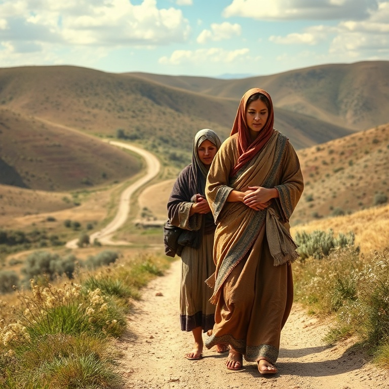
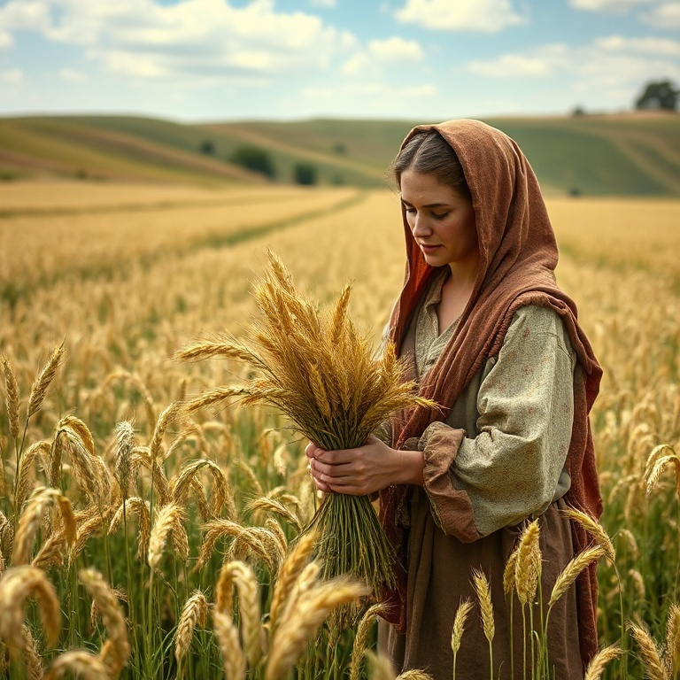
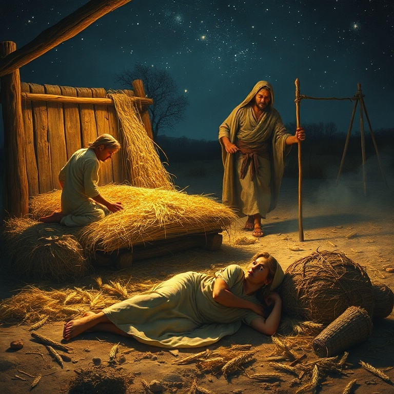
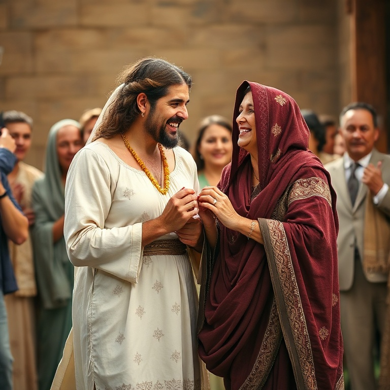

Introdução
Rute é um dos livros mais belos da Bíblia. Em apenas quatro capítulos, ele conta uma história de amor, fidelidade e redenção. Passa-se no período dos juízes, em meio à decadência moral de Israel, mas brilha como um raio de luz na escuridão. Rute mostra que Deus está trabalhando mesmo quando não o vemos. O livro tem apenas 85 versículos, mas seu significado teológico é imenso. Ele traça a linhagem de Davi e, consequentemente, do Messias. Rute, uma moabita, entra na genealogia de Jesus Cristo, demonstrando que a graça de Deus alcança todas as nações. A história de Rute é um belo retrato do evangelho. A mensagem central de Rute é a redenção. O livro usa o conceito do goel, o parente redentor, para ilustrar como Deus redime seu povo. Boaz, como redentor de Rute, aponta para Cristo, nosso Redentor celestial. Rute nos ensina sobre a lealdade, a providência divina e o amor que redime.
1) A Tragédia de Noemi

1) A Tragédia de Noemi
A história começa com uma família de Belém fugindo da fome para Moabe. Elimeleque, Noemi e seus dois filhos, Malom e Quiliom, buscaram sustento em terra estrangeira. Ali, Elimeleque morreu, e Noemi ficou viúva. Seus filhos casaram-se com mulheres moabitas, Rute e Orfa, mas também morreram, deixando Noemi sem marido e sem filhos. Noemi decidiu voltar a Belém ao saber que Deus havia visitado seu povo com pão. Ela despediu suas noras com bênçãos, orando para que Deus lhes desse novos lares. Orfa beijou a sogra e partiu, mas Rute se apegou a Noemi. Suas palavras são das mais belas da Escritura: "O teu povo é o meu povo, o teu Deus é o meu Deus". Rute fez uma escolha radical. Ela deixou sua terra, sua família e seus deuses para seguir Noemi e o Deus de Israel. Não havia garantias, apenas fé. Rute não sabia o que encontraria em Belém, mas decidiu seguir. Sua lealdade a Noemi é expressão de sua fé no Deus de Israel. Noemi chegou a Belém amargurada. Ela disse: "Não me chamem Noemi (agradável), chamem-me Mara (amarga), porque o Todo-Poderoso me encheu de amargura". Noemi não escondeu sua dor. O capítulo 1 termina com duas viúvas pobres em Belém, sem expectativas humanas, mas debaixo dos olhos de Deus.
2) A Fidelidade de Rute

2) A Fidelidade de Rute
Rute foi ao campo para respigar, seguindo os ceifeiros. A lei de Moisés permitia que os pobres respigassem as sobras da colheita. Rute não ficou esperando ajuda; ela tomou iniciativa. Providencialmente, foi parar no campo de Boaz, um homem rico e parente de Elimeleque. A providência de Deus estava em ação. Boaz chegou ao campo e saudou seus trabalhadores: "O Senhor seja convosco". Ele notou Rute e perguntou sobre ela. Informado de sua lealdade a Noemi, Boaz a tratou com bondade. Ele a protegeu, mandou que bebesse da água dos servos e ordenou que os moços não a molestassem. Boaz era um homem justo e generoso. Rute se prostrou e perguntou por que achava graça aos olhos de Boaz. Ele respondeu que sabia de tudo o que ela havia feito por Noemi. Boaz abençoou Rute, dizendo: "O Senhor retribua o teu feito, e seja cumprida a tua recompensa". Rute voltou para casa com bastante cevada e contou tudo a Noemi. A fidelidade de Rute foi recompensada. Ela não buscou seu próprio bem, mas serviu a Noemi. Noemi reconheceu a mão de Deus: "Bendito seja ele do Senhor, que ainda não tem deixado a sua beneficência nem para com os vivos nem para com os mortos". Deus honra aqueles que honram seus compromissos.
3) Rute nos Campos de Boaz

3) Rute nos Campos de Boaz
Noemi, vendo a bondade de Boaz, traçou um plano. Ela instruiu Rute a se lavar, ungir e vestir suas melhores roupas, e ir à eira onde Boaz passaria a noite. Rute deveria descobrir os pés de Boaz e deitar-se, aguardando suas instruções. Era um pedido simbólico de casamento segundo o direito de resgate. Rute obedeceu fielmente. Boaz acordou e perguntou quem era. Rute respondeu: "Sou Rute, tua serva; estende a tua capa sobre a tua serva, porque tu és o parente resgatador". Boaz reconheceu a nobreza de Rute: ela não havia ido atrás de moços ricos ou pobres, mas buscou cumprir o dever familiar. Boaz elogiou Rute e prometeu resolver a questão. Havia, porém, um parente mais próximo que tinha o direito de resgate primeiro. Se ele não quisesse redimir Rute, Boaz o faria. Boaz agiu com integridade, não escondendo a existência de outro candidato ao resgate. A iniciativa de Rute não foi imoral, mas piedosa. Ela agiu dentro dos costumes de Israel, buscando o direito de resgate. Boaz a louvou por sua virtude. O capítulo mostra a confiança de Rute em Boaz e a disposição de Boaz em ser o redentor. É uma figura poderosa de Cristo, nosso Redentor.
4) O Direito de Resgate

4) O Direito de Resgate
Boaz foi à porta da cidade, onde os negócios eram legalmente tratados. Ele chamou o parente mais próximo e reuniu dez anciãos como testemunhas. Boaz apresentou a oportunidade de resgatar a terra de Elimeleque. O parente inicialmente aceitou, mas recuou quando soube que incluía casar-se com Rute e levantar o nome do falecido. O parente mais próximo recusou, dizendo que prejudicaria sua herança. Ele tirou a sandália e a deu a Boaz, confirmando a transferência do direito de resgate. Boaz então declarou publicamente que adquiria tudo o que pertencera a Elimeleque e também Rute para ser sua esposa. Os anciãos abençoaram a união. Boaz casou-se com Rute, e o Senhor a engravidou. Nasceu um filho, Obede. As mulheres de Belém disseram a Noemi: "Bendito seja o Senhor, que não te deixou hoje sem parente resgatador". Obede foi o avô de Davi. A história termina com a genealogia que liga Rute à linhagem real de Israel. O direito de resgate é o conceito central do livro. Boaz pagou o preço para redimir Rute e restaurar a herança de Noemi. Ele é figura de Cristo, nosso Goel, que pagou o preço para nos redimir do pecado e nos dar uma herança eterna. Boaz não apenas resgatou Rute, mas a amou.
Conclusão
Rute é uma história de redenção e graça. Uma moabita, excluída da congregação de Israel pela lei, tornou-se parte da linhagem do Messias. Deus usou uma mulher estrangeira para mostrar que seu amor transcende fronteiras. A fidelidade de Rute foi recompensada de maneiras que ela jamais imaginou. O livro de Rute nos aponta para Jesus, o maior Redentor. Assim como Boaz resgatou Rute, Jesus nos resgatou da escravidão do pecado. A história de Rute nos lembra que Deus está sempre trabalhando nos detalhes, cumprindo seus propósitos de redenção através de pessoas comuns. Nele, encontramos nosso verdadeiro laço de redenção.